ECE 5160 - Fast Robots (2024SP)
Author: Yunxuan Xu (NetID: yx595)
About Me

I am a current M.Eng. student in ECE at Cornell Univerity. I received me B.S. in Physics and B.A. in Math from Case Western Reserve University. I am interested in semiconductor physics, nanofabrication and VLSI.
Lab 1: The Artemis board and Bluetooth
Part I: Examples on the Artemis Board
Objectives
The primary goal of this lab was to establish a foundational understanding and hands-on experience with the SparkFun RedBoard Artemis Nano through a series of tasks.
1. “Example_Blink”
In this part of the lab, the 'Blink' sketch was uploaded to the SparkFun RedBoard Artemis Nano. The onboard LED was programmed to alternate between on and off states. A shown in the video, the blinking blue LED blink with 1 second delay
2. "Example4_Serial"
In this example, we interacted with the Serial Monitor functionality in the Arduino IDE. As seen in the screenshot, the Serial Monitor first outputs a sequence of printed messages confirming the printf capability of the board. Then it allows serial communication by sending string messages to the console and echoing back any user input. When I send message “Send back: Hello”, the monitor echo back the same message.

3. "Example2_analogRead"
In this example, we will explore the Artemis Nano's temperature sensing capabilities. The temperature on the chip will be detected and printed in the second column in the Serial Monitor, as shown in the video. Initially, the temperature is about 32764 (32.764 Celsius). The temperature readings increase to ~33244 (33.244 Celsius) when a finger is placed on the chip, indicating heat transfer, and decrease to ~32900 (32.9 Celsius) when blown upon, showcasing the sensor's responsiveness to temperature variations.
4. "Example1_MicrophoneOutput"
In this part, the Example1_MicrophoneOutput script processes audio input to identify the loudest frequency component using FFT, with the results displayed in real-time via the Serial Monitor. The video dynamically showcases the microphone's ability to detect and respond to frequency changes produced by a frequency generator app. The frequency generated by the phone are 400Hz, 1000Hz and 900 Hz, while the result shows there is a bias about 7Hz.
5000 Level: LED Response to Musical 'A' Note
The task uses the microphone to detect sound frequencies and activate an LED when the musical "A" note (440 Hz) is identified. The screenshot confirms the Serial Monitor’s output, where frequencies near 440 Hz trigger a "Yes" response. A tolerance of 10 Hz accommodates minor deviations, accounting for a slight bias previously noted. The video shows the LED activation when a ~440 Hz tone is generated by a frequency generator.

Part II: Bluetooth Connection
Objectives
The objective of this part of the lab is to understand the BLE technology and its application in connecting the Artemis board to a computer. By the end of this part, we should be able to send and receive data over Bluetooth, exploring how this capability can be integrated into future labs.
Prelab
The prelab setup entailed a series of steps, including the installation of Python, setting up a virtual environment, and acquiring the ArduinoBLE library. After 'ble_arduino.ino' sketch was uploaded to the Artemis board, the Serial Monitor displayed the BLE advertisement and the board's MAC address, as shown in the screenshot. Now the computer can recognize the board as a Bluetooth device and establish a secure connection for data exchange. The codebase facilitates Bluetooth communication between the computer and the board, managing functions such as initializing the BLE connection and sending/receiving data.
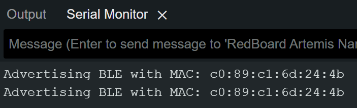
BLE Configuration
The first step involved updating the 'connection.yaml' file with the MAC address obtained during the prelab. A new UUID was then generated using the “uuid4()” function to uniquely identify the BLE service and was subsequently replaced in both the 'ble_arduino.ino' and the 'connection.yaml', as shown in the first two screenshots. The purpose of changing UUIDs is to create a unique identifier for services and characteristics, which prevents conflicts with other BLE devices and ensures secure, correct pairing. The third screen shows the connetion is established in Python.
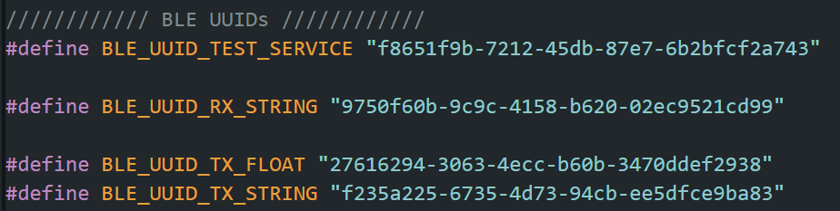
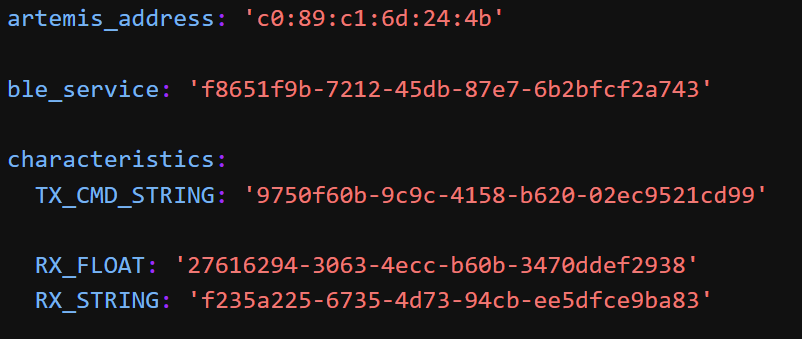
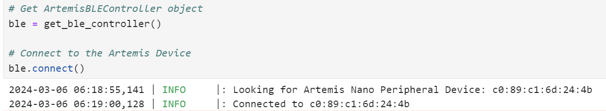
1. "ECHO" Command
Python script sends a string to the board using the "send_command" function. The Artemis, programmed with a switch-case structure in its Arduino sketch to handle various commands including "ECHO", responds by sending back a confirmation message. This round-trip communication is visually confirmed by outputs of both the Serial Monitor and Python console, as shown in the screenshots.
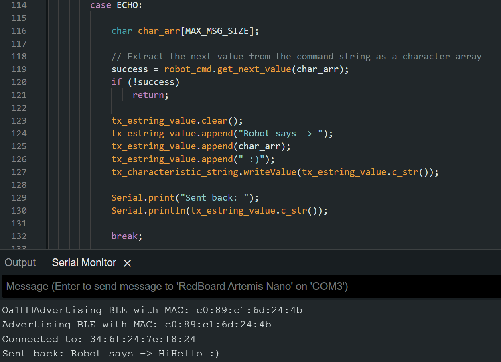
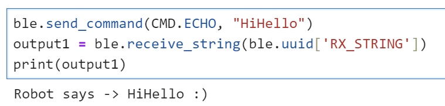
2. "GET_TIME_MILLIS" Command
Similarly, with the switch-case structure, the "GET_TIME_MILLIS" command is sent from the Python script to the board to retrieve the current time in milliseconds. In the Arduino code, the "millis()" function is used and the output is cast to a double data type to ensure precision in the transmitted data. The codes and outputs is shown below.
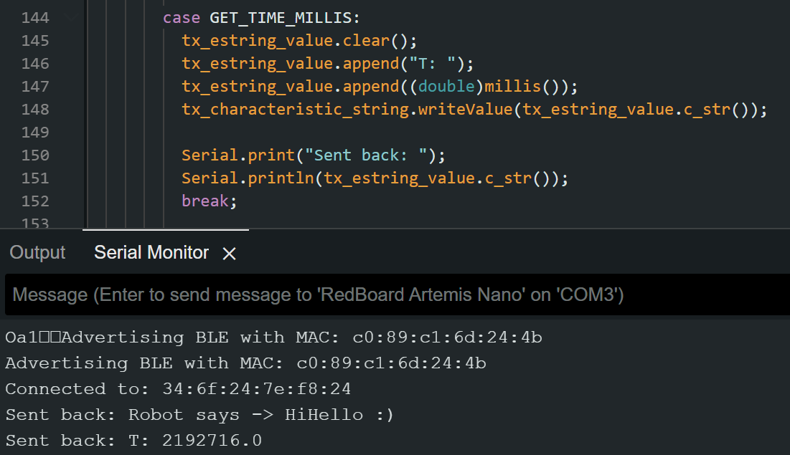
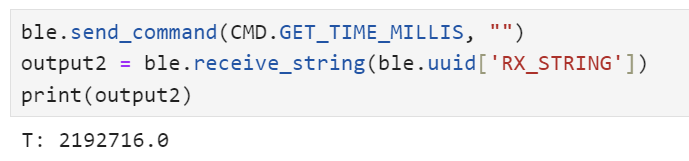
3. "notification_handler" Function
The notification_handler function is invoked automatically whenever the board sends data. It processes the incoming byte array, extracting the time data in milliseconds. This data is then converted into seconds for readability and added to an array for potential future analysis.
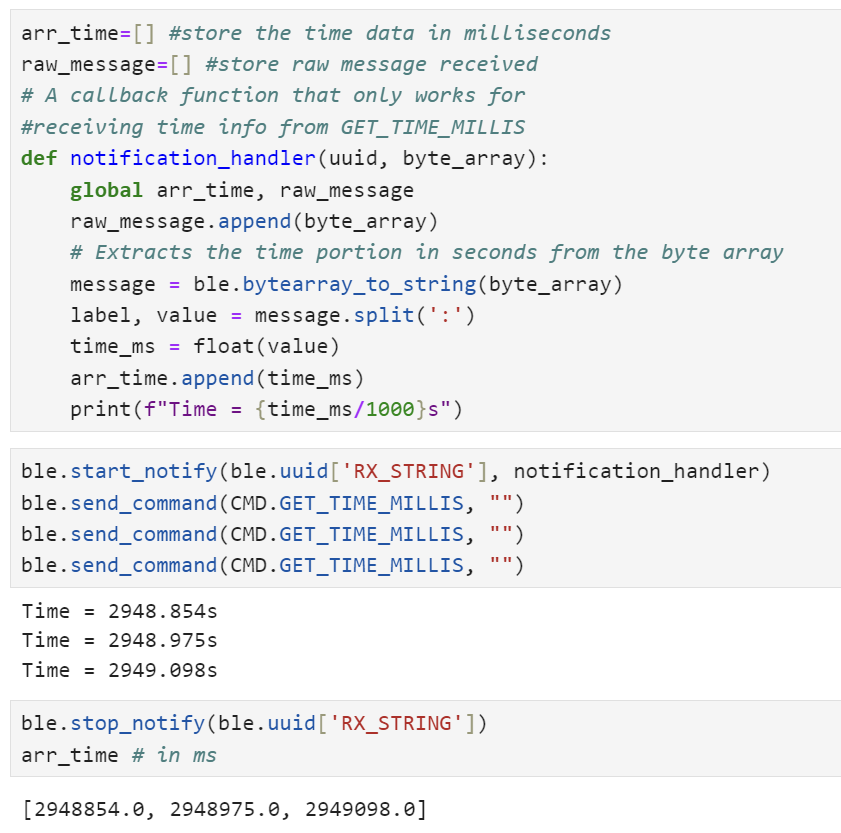
4. Data Transfer Rate 1
The "GET_TIME" command, records time data points 'len' times, and at the end, calculates the duration required to send 'len' data points. The last time data point sent represents the total time taken for the transmission process. The Python script then calculates the effective data transfer rate in bytes per millisecond. Integer value 'len' is user-defined in "ble.send_command(CMD.GET_TIME, len)". Increase 'len' to improve the accuracy of the transfer rate calculation.
 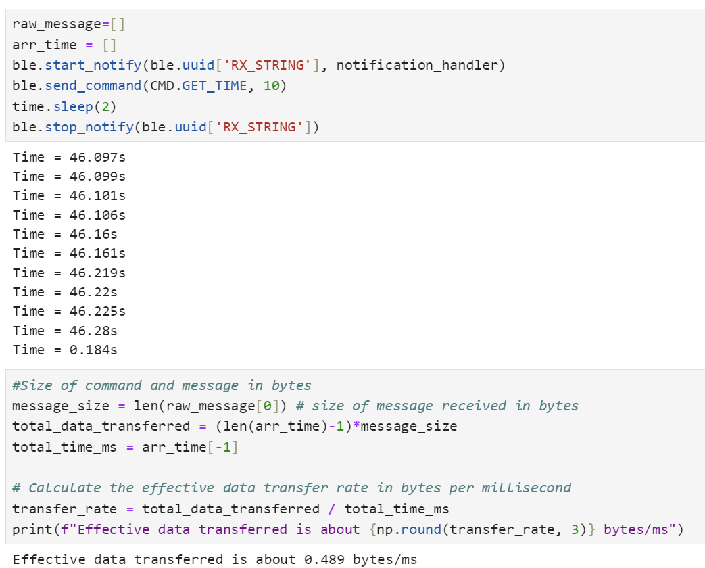
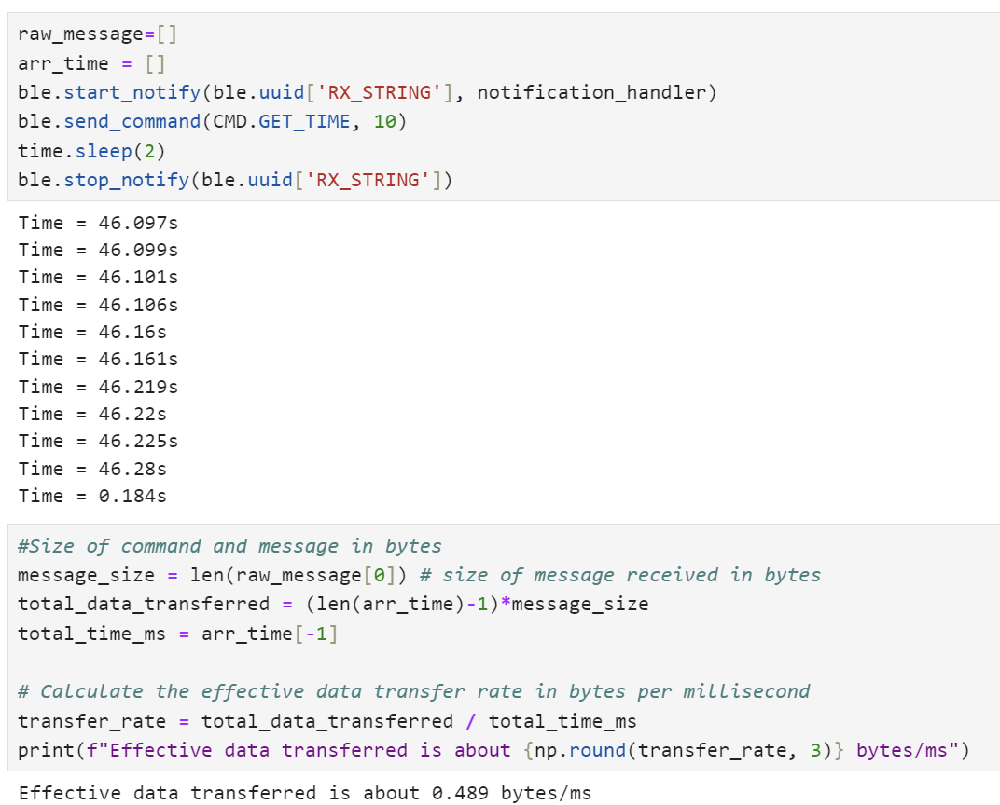
5. "SEND_TIME_DATA" Command
In "SEND_TIME_DATA" case, the board captured timestamps and storing them in an array until the max_array=20 was reached. It then transmitted each timestamp back to the computer.
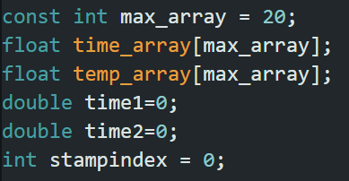
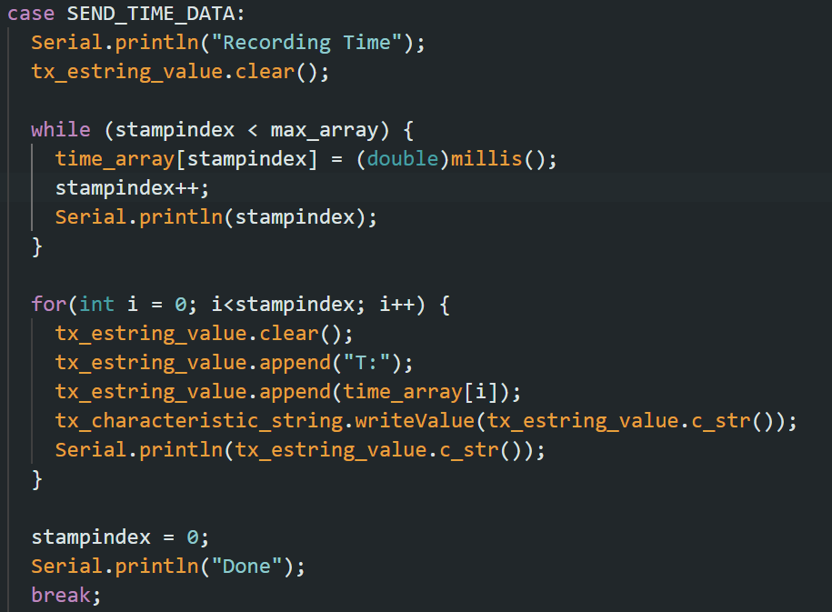
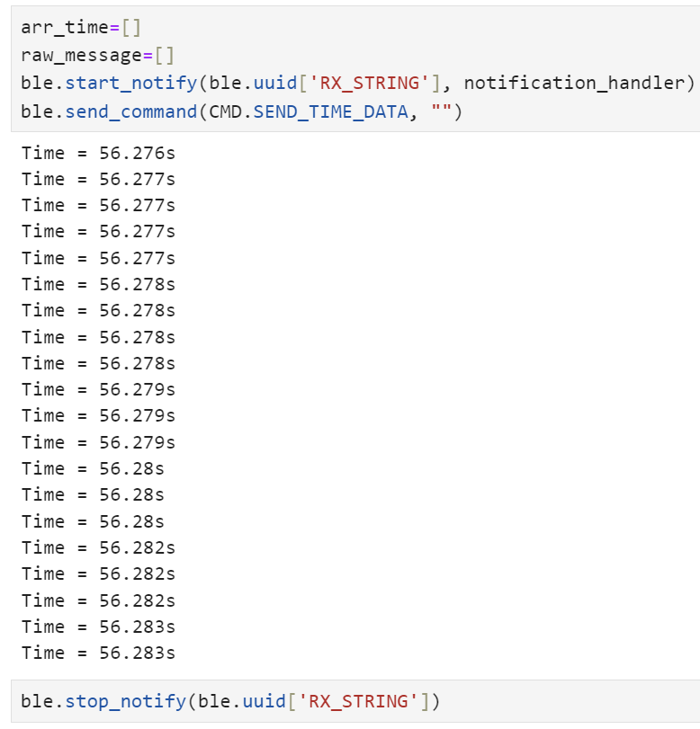
6. "GET_TEMP_READINGS" Command and "notification_handler2" Function
The "GET_TEMP_READINGS" case, each reading is acquired using "getTempDegC()" and stored with a corresponding timestamp from "millis()". The completed array is then sent back to the computer in batches. On the Python side,"" notification_handler2" is tasked with receiving this data, parsing the time and temperature values, and appending them to their respective lists.
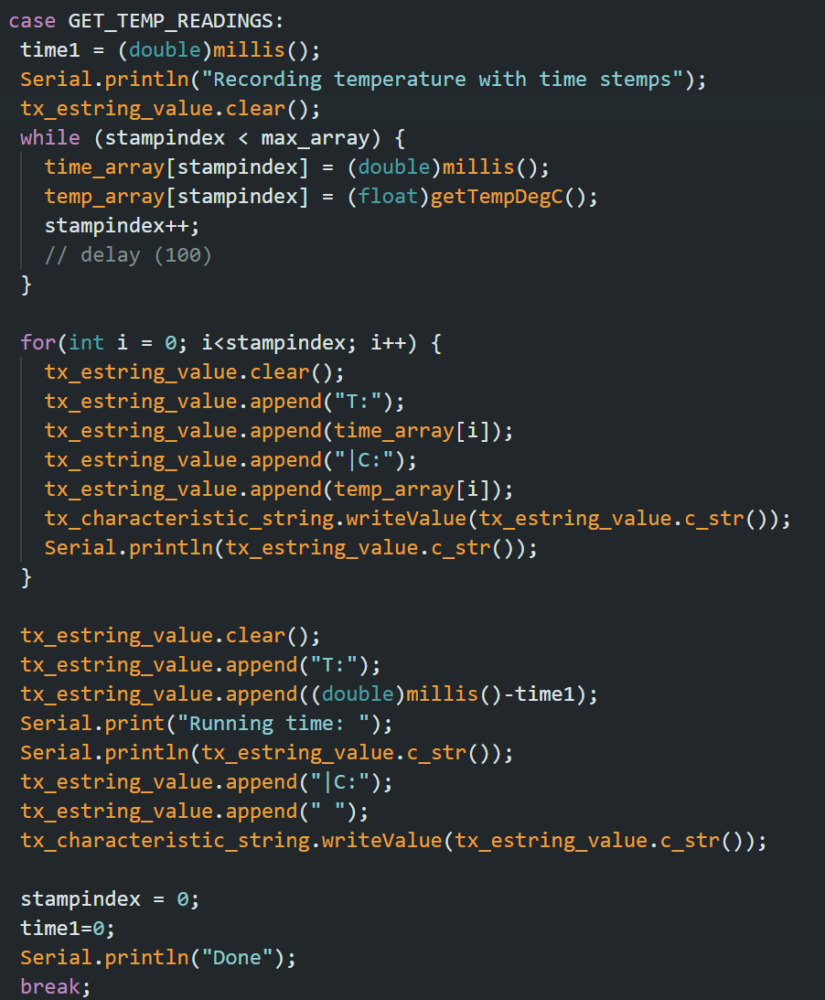
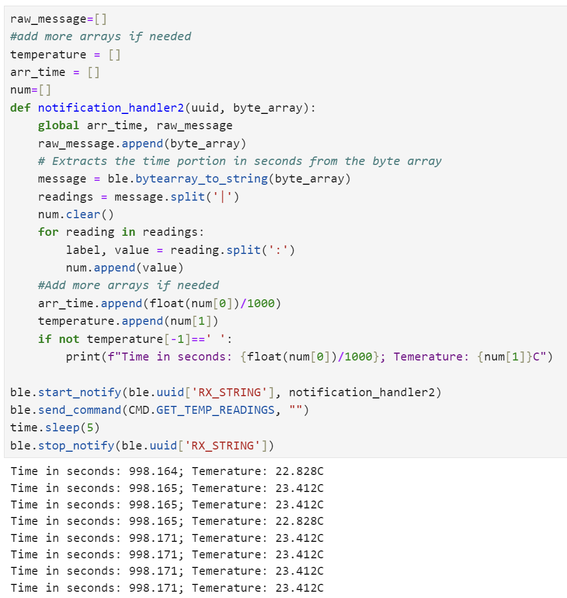
7. Data Tranfer Rate 2
In "GET_TEMP_READINGS" command, the total process time required to store data into array and send array is calculated. This process time is stored in the last row of time_array and be sent as the last time data point. The Python script can then calculate the effective data transfer rate. As shown in the screenshot below the effective data transfer rate is ~1.041 bytes/ms, which is greater than 0.489 bytes/ms we get in task 4 “Data Transfer Rate 1”.
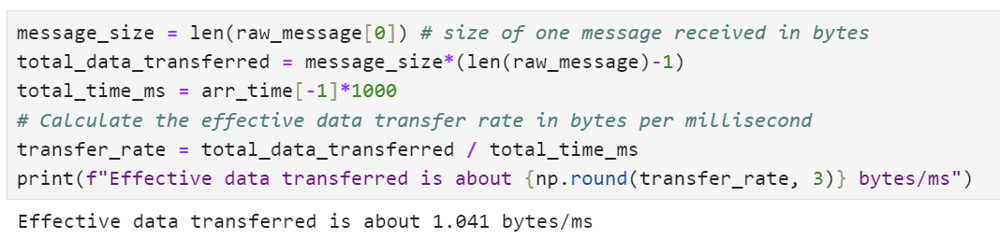
The faster rate of 1.041 bytes/ms comes from storing multiple readings in an array before sending, which reduces overhead and increases efficiency. Conversely, the slower rate of 0.489 bytes/ms is due to sending each reading immediately after it's taken, which includes more communication overhead for each individual transmission.
Given that doubles occupy 8 bytes and floats occupy 4 bytes, each time-temperature pair constitutes 12 bytes. Furthermore, string representations like 'T:294649.0|C:23.412' require an additional 19 bytes for ‘tx_estring_value’ before sending it. Therefore, ignoring the memory overhead, subtracting this string size from the total available memory (384 KB) and dividing by the size per data pair gives a rough estimate of how many pairs can be stored. (384000-19)/12 ≈ 31998 time-temperature pairs can be stored.
5000 Level: Effective Data Rate and Overhead
The "CALC_DATA_RATE" command in the Arduino sketch send back a specified number of 'A' characters, as a measure of the bytes of data transmitted over BLE within a certain timeframe. In Python script, data rates were calculated based on the duration taken for replies ranging from 5 bytes to 120 bytes. The observed data rates plotted against the message sizes indicate a general increase in data rate with larger packets, suggesting better efficiency with fewer packets. The sudden drop seen in the plot for the largest packet size could indicate a limit to this efficiency gain at higher data loads.
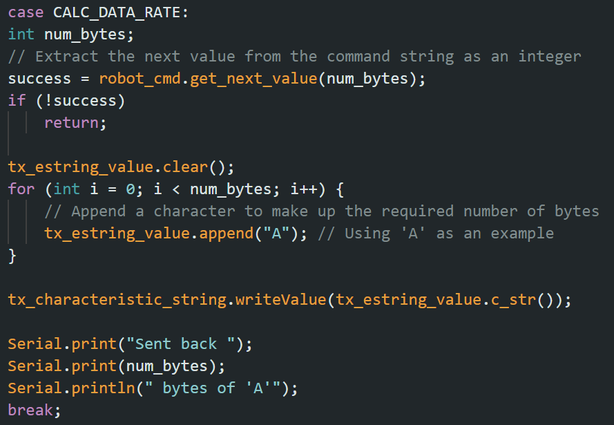
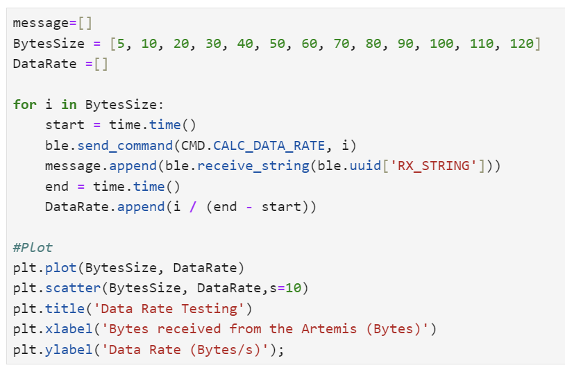
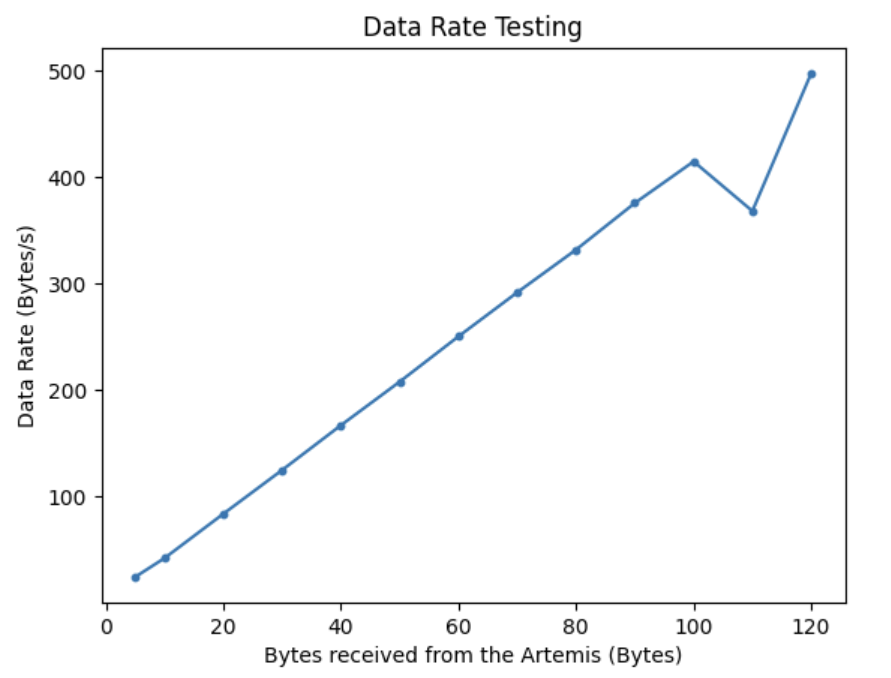
5000 Level: Reliability
By successfully sending and confirming the receipt of large data packets – 130, 140, and 150 bytes – with no loss, the computer demonstrates its ability to accurately read all data published by the Artemis board, as shown in the screenshot. This suggests high reliability in the BLE communication channel, as even when approaching the byte size limit of 151 bytes, the data integrity is maintained without any observed loss or missed information.
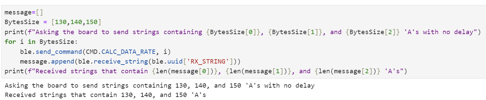
Dicussion
Throughout this lab, I've gained a deeper understanding of BLE communication, learning how varying data packet sizes affect transfer rates. One significant challenge was adapting the notification handler function for various data sizes, leading to the creation of "notification_handler2", capable of processing multiple data types. Implementing this handlers function for data processing is important for future labs.
Lab 2: IMU
Objectives
The objective is to deepen the understanding of integrating sensors with robotics, focusing on an Inertial Measurement Unit (IMU) and managing autonomous power via a battery. This lab aim to implement the IMU with an RC car, utilizing the sensor data to analyze a dynamic stunt.
1. Set Up the IMU
As shown in the first picture below, the IMU connected via the red cross-shaped QWIIC connectors to the Artemis board on the right.
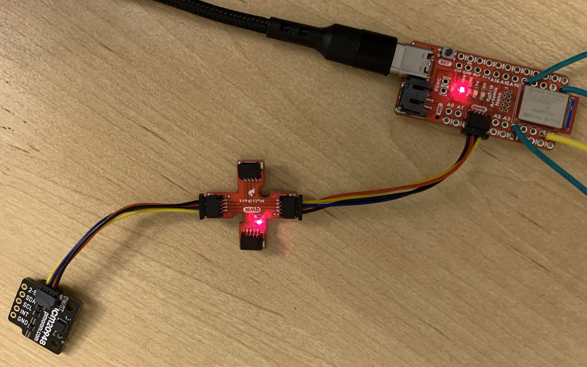
The AD0_VAL defines the last bit of the I2C address for the IMU sensor. Here, the AD0_VAL is set to 0, as shown in the code snippet, to succesfully initialize the sensor. AD0_VAL of 1 will not work. The screenshot also illustrates the successful compilation and output of the Example1_Basics.ino sketch, where the serial monitor displays real-time sensor data outputs, including scaled acceleration, gyroscope, and magnetometer readings in x-, y- and z-axis, as well as the temperature readings. This complete set of readings confirms the IMU is connected with the Artemis.
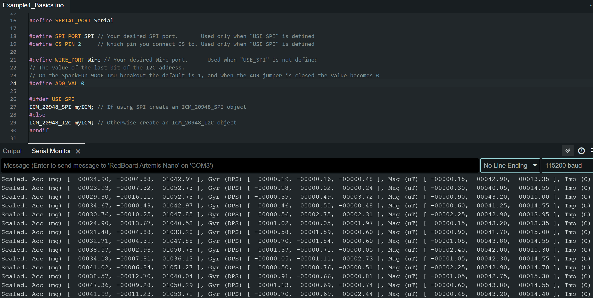
I create the “Accelerometer.ino” program to visualize the sensor data through the Serial Plotter, which has value 2, 3, and 4 corresponding to the x-, y-, and z-axis accelerometer readings, and value 5, 6, and 7 corresponding to the x-, y-, and z-axis gyroscope readings. When the IMU flat on the table, the Serial Plotter shows overlapping x and y-axis accelerometer readings, as shown in screenshot below. This overlapping is expected due to gravity's effect primarily on the z-axis in this position.
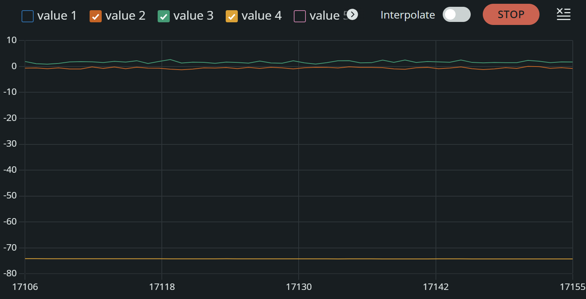
Upon rotating the IMU along the cable axis, the accelerometer data, as seen in the left picture, exhibits noticeable fluctuations. This noise is attributed to the accelerometer's high sensitivity to even minor movements. In contrast, the gyroscope readings, depicted in the right picture, are smoother. This smoothness is expected as gyroscopes measure rotation without the influence of gravitational acceleration. However, the gyroscope is subject to drift over time, which can lead to accumulating errors and a shift in the baseline, as suggested by the trend in the y-axis magnitude. This phenomenon underscores the importance of combining accelerometer and gyroscope data for more accurate motion tracking.
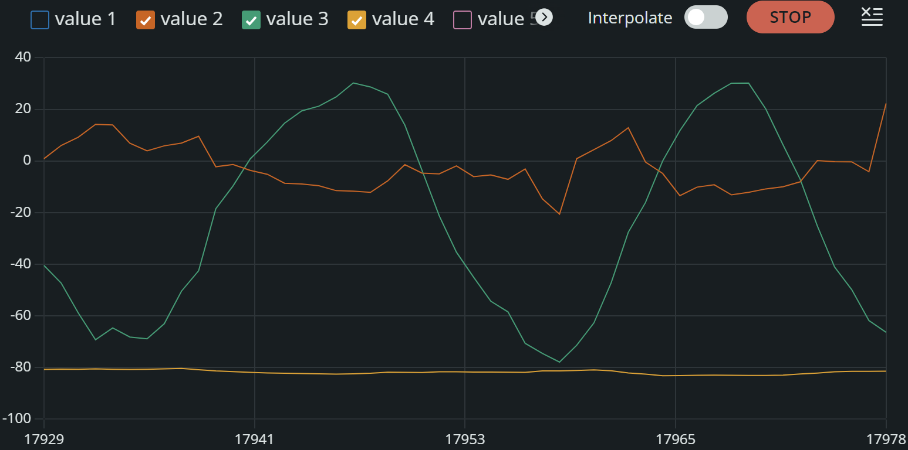
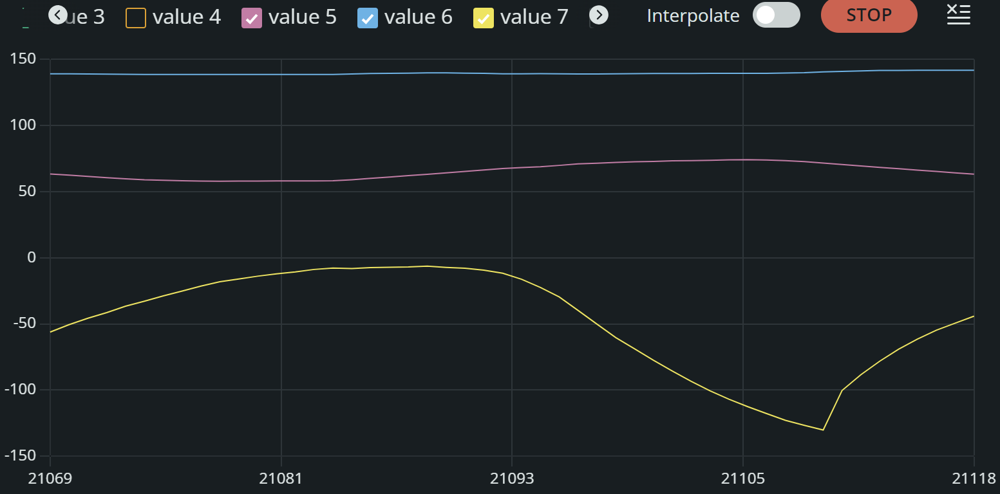
The visual indication, blinking built-in LED three times, is implemented. The blink function is shown in code snippet below. And the function "pinMode(LED_BUILTIN, OUTPUT)"" and "blink(3)"" are called within the setup to execute the blink pattern three times after the board initialization.
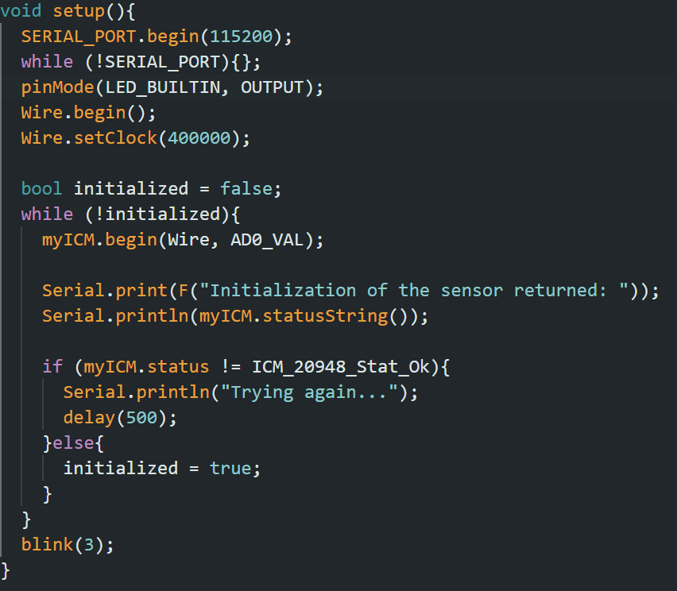
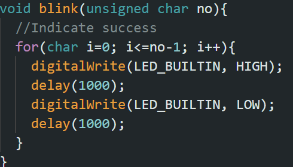
2. Accelerometer
The left picture shows the equation used to calculate the pitch and roll angles from accelerometer readings, while the right picture shows the code snippet that prints these angles out.
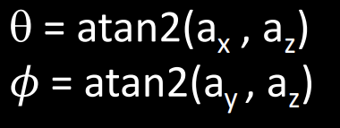
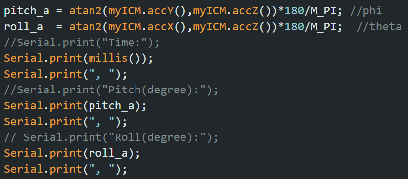
The angle data is then processed in Python script for visualization. As shown in the two plots below, a clear pattern of change in pitch and roll angles from -90 to 0 to 90 degrees. Notably, as one angle reaches its extremities, the data for the other angle becomes more variable. This is due to the inherent limitations of accelerometers at extreme tilt angles.
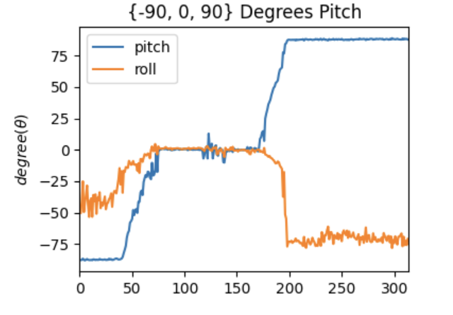
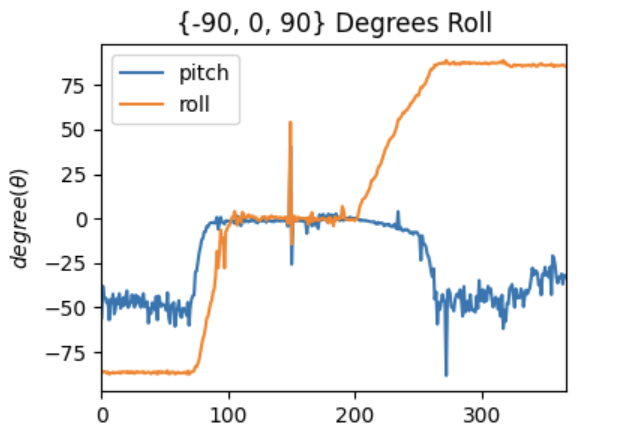
The code snippet below shows that the conversion factors of 1.038 for roll and 1.027 for pitch were obtained through a two-point calibration process, indicating the high precision of the sensor after calibration.
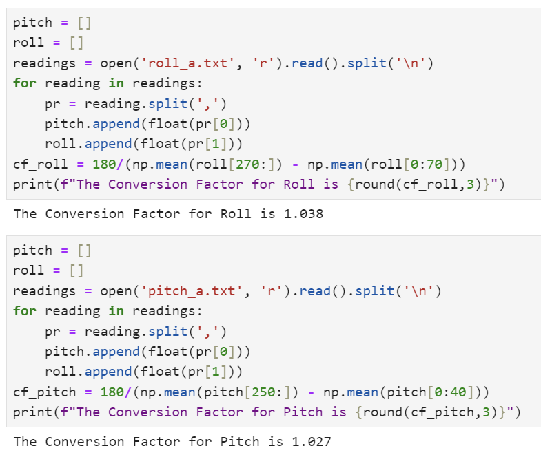
The graph below presents the amplitude of frequencies detected in the data, with both pitch and roll showing significant components at low frequencies. This suggests that the most substantial movements picked up by the accelerometer occur at or below 1 Hz.
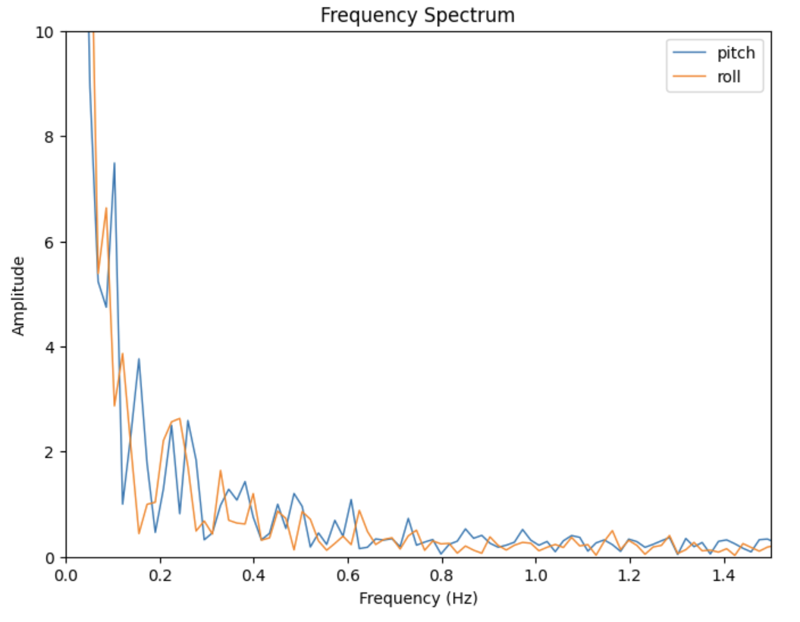
A cut-off frequency of 1 Hz is chosen based on this analysis. By applying a low-pass filter with this cut-off, we obtain the filtered signals shown in the following graph. The comparison between raw and filtered data indicates that the high-frequency noise is significantly reduced, resulting in smoother and more interpretable curves.
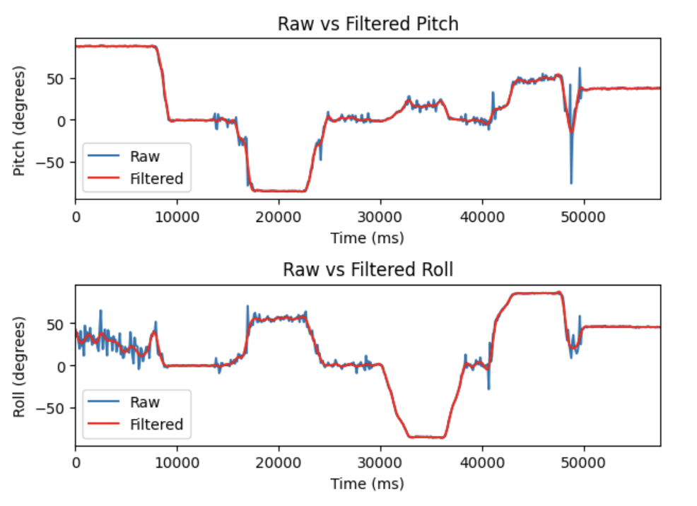
3. Gyroscope
The pitch, roll and yaw in degree is calculated using the code snippet below.
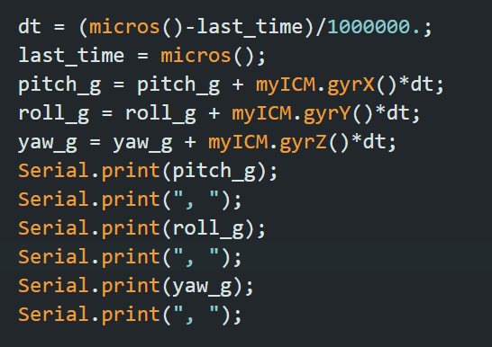
The following two plots are from the readings of gyroscope(left) and accelerometer(right) when the sensor is stationary. The left plot illustrates the sensor's drift over time, showing slight deviations. This highlights the inherent drift characteristic of gyroscopes, requiring periodic recalibration to correct for this drift over time.
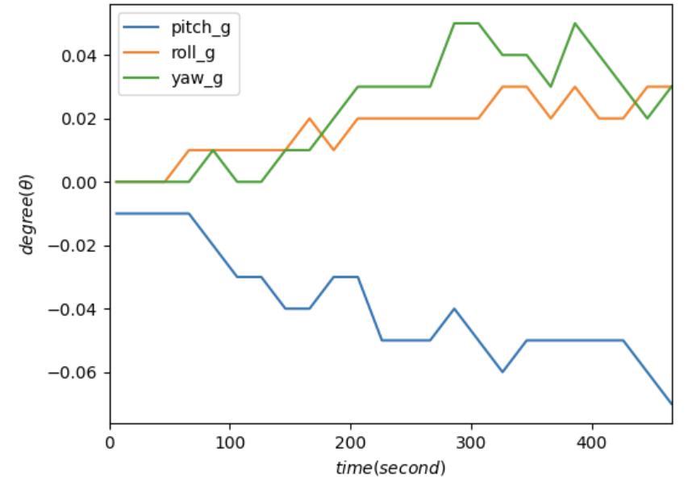
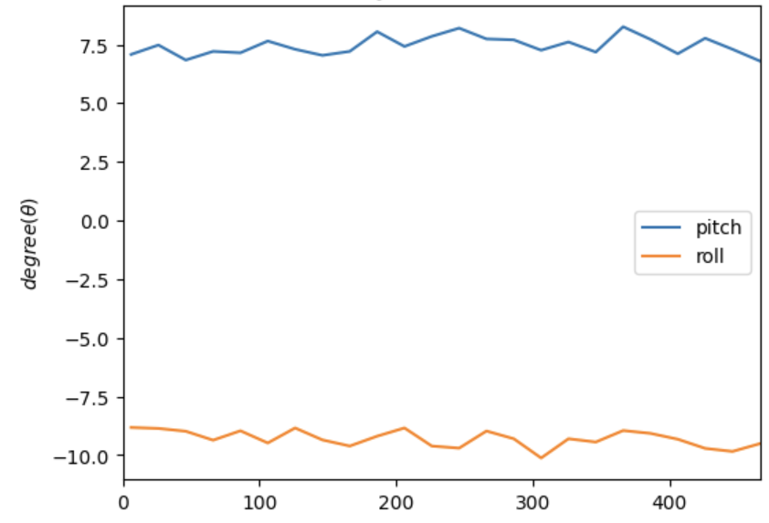
The analysis of the gyroscope data when the IMU is randomly shaken shows a significant difference in sensitivity between the accelerometer and the gyroscope. The gyroscope readings, represented by the blue, pink, and ywllow curves, are less affected by the high-frequency noise that the accelerometer readings (green and orange) pick up.
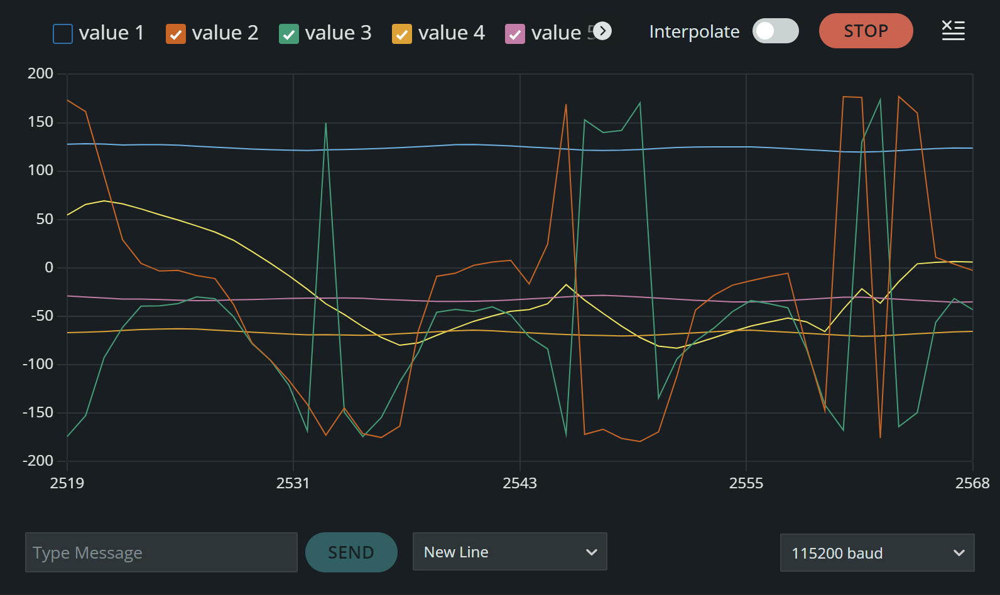
The following two plots demonstrate that while the patterns of motion recorded by the gyroscope are similar to those of the accelerometer, there is a discrepancy in magnitude. This suggests that the gyroscope is better at capturing consistent rotational velocities but may require scaling or calibration to match the exact motion.
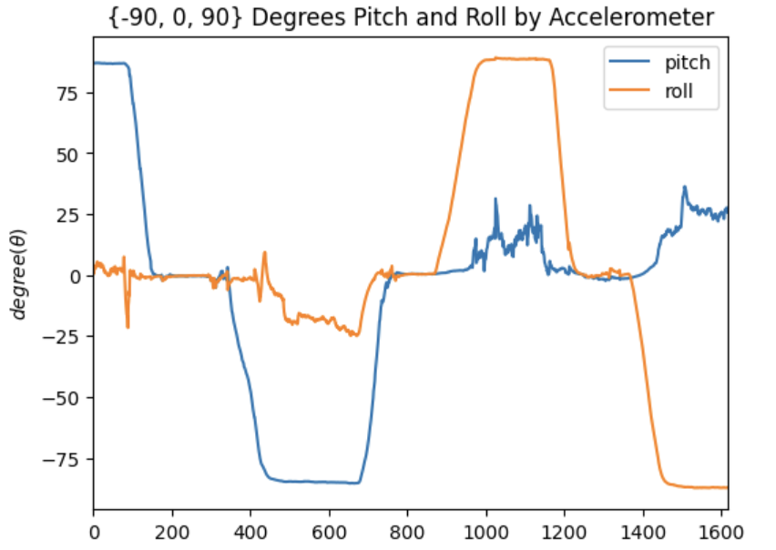
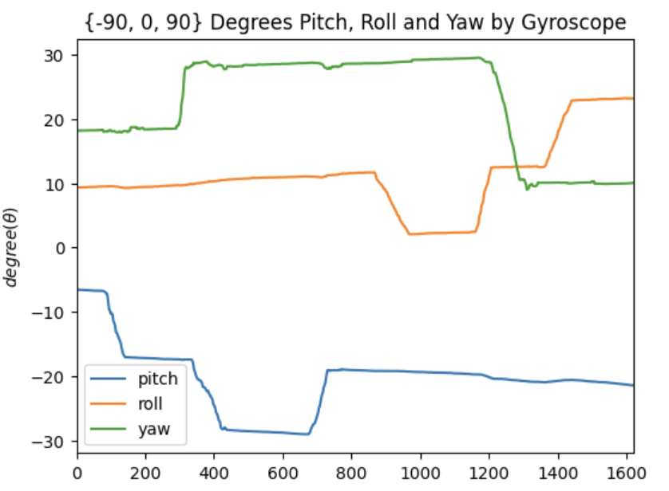
The variation in smoothness between the two sets of gyroscopic data is attributed to the difference in sampling rates. The left graph with a 30ms delay between samples shows a smoother curve, while the second graph with a 300ms delay exhibits a rougher appearance. Thus, high sample rate is important for accuracy.
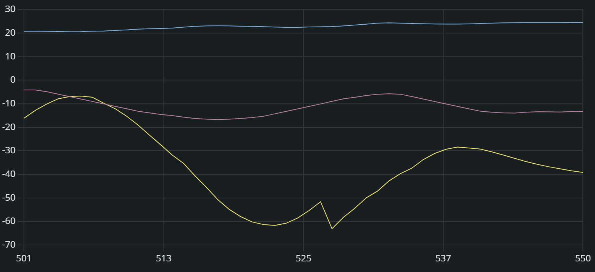

Applying the complimentary filter as shown below integrates the gyroscopic and accelerometer data to correct for the gyroscope's drift and the accelerometer's high sensitivity to immediate movements. The weight of 0.1 in the complimentary filter effectively combines the stability of the gyroscope with the accelerometer's precision. As shown in the plot on the right, both low-pass filter and the complimentary filter effectively reduce the noise.
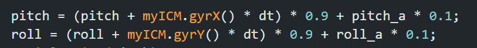
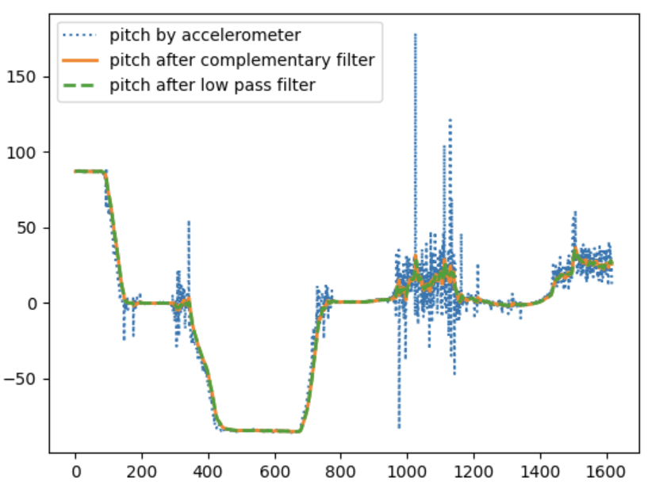
The conversion factor of 1.044 and 1.021 indicate the data's accuracy post-filtering.
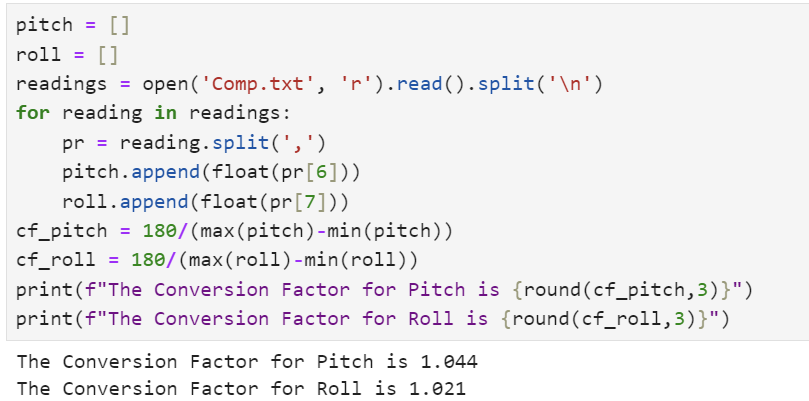
Lab 3
Content for Lab 3...
Lab 4
Content for Lab 4...
Lab 5
Content for Lab 5...
Lab 6
Content for Lab 6...